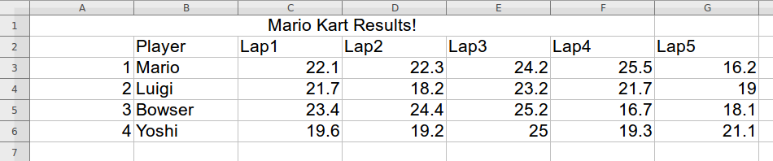
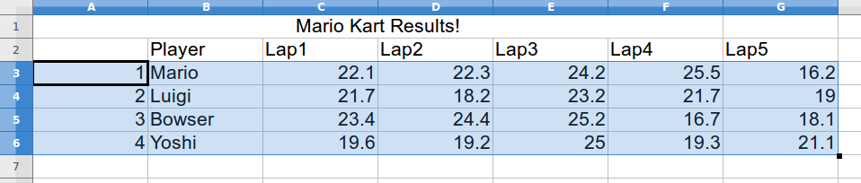
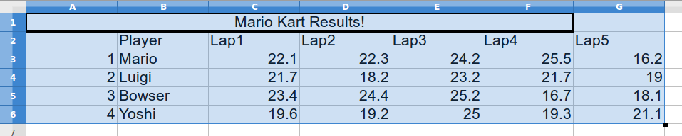
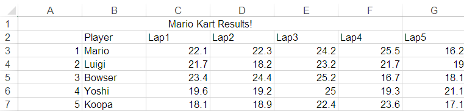

Contents
% Copyright 2015, Ashwin Srinath, All Rights Reserved % LICENSE: MIT (http://opensource.org/licenses/MIT) % (TL;DR) % You can do whatever you want % with this code % as long as you include the original copyright % and license in their original sources. % I don't guarantee that % any of this code % serves any purpose whatsoever.
Excel Input and Output
Reading Data from Excel Files
Here's the data in the file RaceResults.xlsx:

We notice that the data is a combination of both numbers and text, and we'd like to load this data into MATLAB. To do this, we will use the xlsread function:
[num, txt] = xlsread('RaceResults.xlsx');
xlsread returns two values, num and txt.
1. num is a matrix containing all the numeric data
2. txt is a cell array containing all the text data
To understand what goes in num, look at the spreadsheet, and draw the smallest rectangle that holds all the numeric values:

MATLAB will put the values inside this rectangle in the matrix num. For anything in the rectangle that is not numeric data, MATLAB will put NaN. Thus, we have the following result for num:
disp(num)
1.0000 NaN 22.1000 22.3000 24.2000 25.5000 16.2000
2.0000 NaN 21.7000 18.2000 23.2000 21.7000 19.0000
3.0000 NaN 23.4000 24.4000 25.2000 16.7000 18.1000
4.0000 NaN 19.6000 19.2000 25.0000 19.3000 21.1000
5.0000 NaN 18.1000 18.9000 22.4000 23.6000 17.1000
To understand what goes in txt, look at the spreadsheet, and draw the smallest rectangle that holds all the text data:

MATLAB will put the values inside this rectangle in the cell array txt. For anything in the rectangle that is not text data, MATLAB will put an empty string (''). Thus, we have the following result for txt:
disp(txt)
Columns 1 through 6
'Mario Kart Results!' '' '' '' '' ''
'' 'Player' 'Lap1' 'Lap2' 'Lap3' 'Lap4'
'' 'Mario' '' '' '' ''
'' 'Luigi' '' '' '' ''
'' 'Bowser' '' '' '' ''
'' 'Yoshi' '' '' '' ''
'' 'Koopa' '' '' '' ''
Column 7
''
'Lap5'
''
''
''
''
''
Once the data has been read into num and txt, you can pull out values you need from them. For instance, let's say we want to store the lap times into a separate matrix, we can do:
lap_times = num(:, 3:end)
lap_times = 22.1000 22.3000 24.2000 25.5000 16.2000 21.7000 18.2000 23.2000 21.7000 19.0000 23.4000 24.4000 25.2000 16.7000 18.1000 19.6000 19.2000 25.0000 19.3000 21.1000 18.1000 18.9000 22.4000 23.6000 17.1000
And let's say we want to store the player names into a separate cell array:
player_names = txt(3:end, 2)
player_names =
'Mario'
'Luigi'
'Bowser'
'Yoshi'
'Koopa'
Remember, when you access values from a cell array using round brackets (), the values are returned in a cell array. Since we want player_names to be a cell array of strings, we use round brackets to access values from txt.
Don't confuse this with using curly brackets {} to access values from a cell array, which doesn't put values in a new cell array.
Writing Data to Excel Files
Let's say we have some new data that we'd like to write into RaceResults.xlsx:
new_name = {'Koopa'};
new_lap_times = [18.1, 18.9, 22.4, 23.6, 17.1];
We can do this as follows:
xlswrite('RaceResults.xlsx', 5, 1, 'A7'); xlswrite('RaceResults.xlsx', new_name, 1, 'B7'); xlswrite('RaceResults.xlsx', new_lap_times, 1, 'C7');
Now have a look at RaceResults.xlsx:

The line
xlswrite('RaceResults.xlsx', 5, 1, 'A7');
tells MATLAB we want to write the number 5 to RaceResults.xlsx, in Sheet 1, Cell A7.
Similarly, the line
xlswrite('RaceResults.xlsx', new_name, 1, 'B7');
tells MATLAB we want to write the cell array new_name to RaceResults.xlsx, in Sheet 1, Cell B7. Remember, when you're writing a string, or a collection of strings to an excel file, you need to put them in a cell array first. That's why new_name is {'Koopa'}, and not 'Koopa'.
And finally, the line
xlswrite('RaceResults.xlsx', new_lap_times, 1, 'C7');
tells MATLAB we want to write the vector new_lap_times to RaceResults.xlsx, in Sheet 1 and beginning at Cell C7.